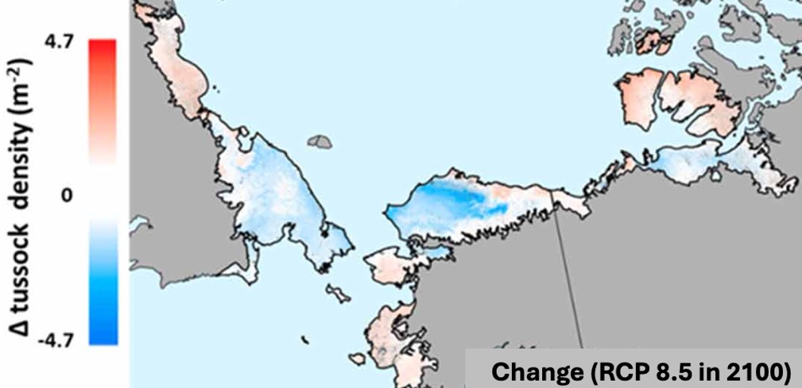
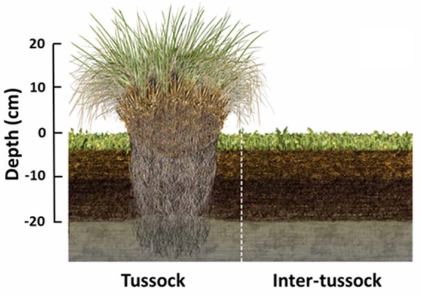
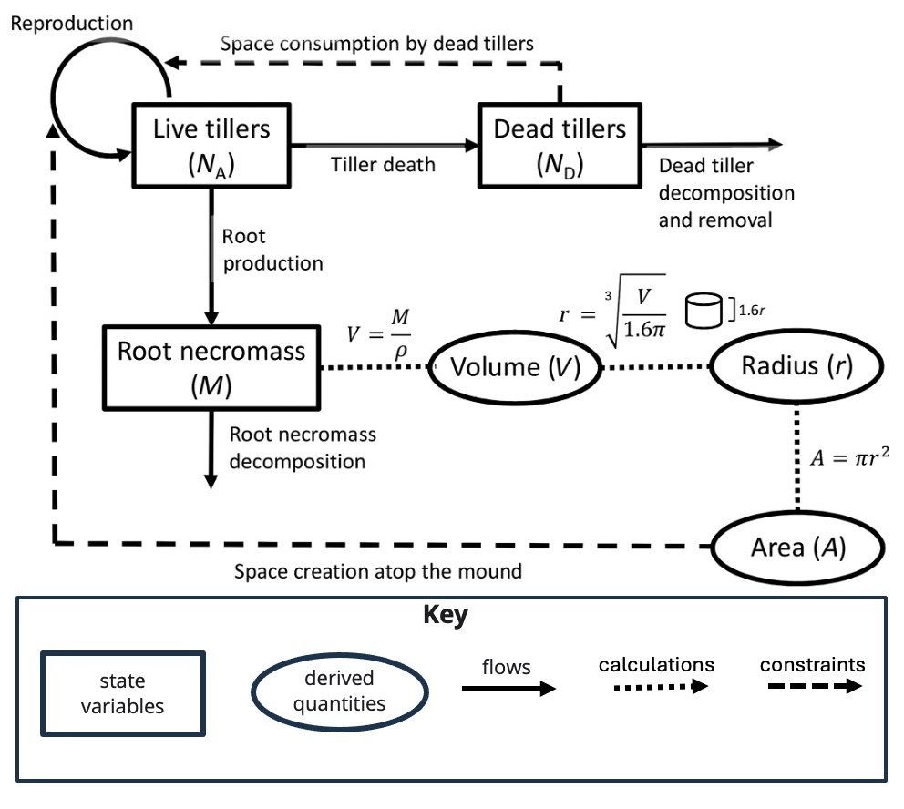
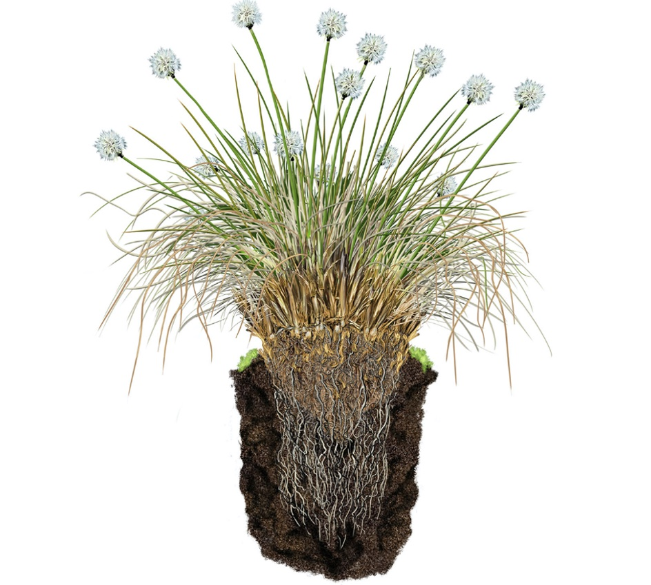

Understanding the role of Tussocks in tundra ecosystems
How climate change impacts vegetation carbon stocks in Arctic ecosystems depends on the aggregate response of individual species weighted by their relative roles in the ecosystem. Foundation species including tussock-forming sedges which are common in tundra ecosystems will play an important role due to their disproportionately large impacts on ecosystem structure and function. There is a large body of studies focused on shifts from tussock to shrub tundra ecosystems. However, less is known about how these shifts impact total ecosystem carbon storage including belowground (root and litter) carbon stocks. Moreover, tussock-forming sedges and in some cases, tundra vegetation more broadly are coarsely represented in terrestrial biosphere models.
This project brought together collaborators from 12 institutions to survey 98 field sites on 2 continents. We surveyed the size of the tussock carbon stock. Then we used these surveys together with other field data sets and machine-learning models to demonstrate that tussock-forming sedges are vulnerable to climate change.

Random forest projections of changes in tussock density in 2100 under RCP 8.5

Schematic diagram of tussock and inter-tussock tundra soil profiles
This project also yielded the first model of tundra tussock forming sedges, which we parameterized using model-data fusion. This effort improved our understanding of the tussock growth form and the ability to represent this species in other similar growth forms in terrestrial biosphere models.

Conceptual diagram of the new mathematical tussock model

Artist’s rendition of a cross-section of a tussock
- New Phytologist (tussock model)
- Environment Research Letters (tussock range shifts)
- New Phytologist (tussock ecotypes)
- Rocha 2018 in Environment Research Letters (tundra greening)
- Environmental Research Letters (subsurface flow in tundra ecosystems)